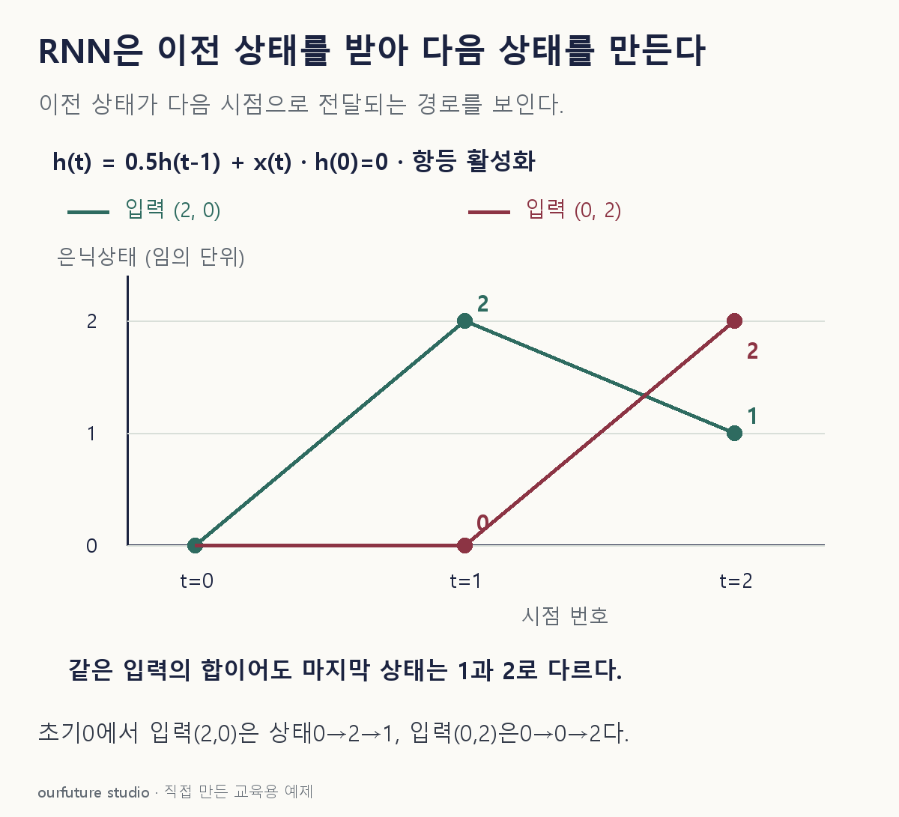

핵심 이론
RNN은 현재 입력과 이전 은닉상태로 현재 은닉상태를 계산한다. 같은 변환의 매개변수를 시간에 걸쳐 반복 사용하므로 순서가 계산에 영향을 줄 수 있다. 상태가 있다는 말은 과거를 무한히 정확하게 저장한다는 뜻은 아니다. 긴 의존성에서는 학습과 표현의 제약을 검토해야 한다.
산술을 보기 위해 활성화를 항등함수로 둔 축약 모형 hₜ=0.5hₜ₋₁+xₜ를 사용하자. 초기 상태 0에서 입력 (2,0)은 마지막 상태 1, 입력 (0,2)은 2가 된다. 두 입력의 합은 같지만 순서 때문에 과거값이 받는 축소 횟수가 다르다. 일반 RNN의 tanh 등과 구별해 문제에서 이 계산식을 명시한다.
seq2seq는 인코더가 입력 시퀀스의 표현을 만들고 디코더가 출력 시퀀스를 생성하는 구성이다. 번역처럼 입력과 출력 길이가 달라도 된다. 초기 고정 문맥 벡터 구성과 어텐션을 연결한 구성은 다르므로 모든 인코더·디코더가 하나의 고정 벡터만 쓴다고 단정하지 않는다.
작은 예제로 확인하기
항등 활성화인 교육용 순환식 hₜ=0.5hₜ₋₁+xₜ, h₀=0을 사용한다.
| 입력 순서 | h₁ | h₂ |
|---|---|---|
| (2,0) | 2 | 1 |
| (0,2) | 0 | 2 |
현재 입력이 같아도 이전 상태가 다르면 다음 상태가 달라진다. 이 표는 학습 실험 없이 주어진 식을 계산한 결과다.
그림으로 확인하기

직접 고르기
hₜ=0.5hₜ₋₁+xₜ, h₀=0. 입력은 x₁=2, x₂=0이다.
마지막 상태 h₂는?
- 1. 0
- 2. 1
- 3. 2
- 4. 3
정답과 오답의 이유 확인하기
정답 2번 — 1
h₁=0.5×0+2=2, h₂=0.5×2+0=1이다.
- 1번: 마지막 입력만 사용하고 이전 상태를 버렸다.
- 3번: 이전 상태에 적용하는 0.5를 빠뜨렸다.
- 4번: 제시된 순환식으로 얻을 수 없는 값이다.
조건 하나 바꾸어 풀기
입력 순서만 x₁=0, x₂=2로 바꾸면 h₂는?
풀이: 2.
첫 상태는 0이고 마지막에 2가 들어오므로 0.5×0+2=2다.
다시 떠올릴 단서
현재 입력과 이전 상태를 한 줄에 놓는다.
근거와 적용 조건
- Attention Is All You Need — 3.1 인코더·디코더 구성 및 3.2.3 어텐션을 이용한 연결 범위. 확인일 2026-10-31.
- PyTorch torch.nn.RNN — RNN 정의·수식 및 동등 구현 코드: 현재 입력, 이전 은닉상태, 시간에 걸친 매개변수 공유. 본문의 항등 활성화식은 교육용 축약이다. 확인일 2026-10-31.
상황·수치·보기·조건 변경은 자체 교육 예제다. 민간 복원 문항의 공식 정답이나 실제 성능·학습 효과를 뜻하지 않는다.
읽은 내용을 적용해 보기
축약된 항등 활성화 모형이다. 일반 RNN·seq2seq 학습을 수행하거나 모든 RNN의 순서 민감성을 수치로 보장하지 않는다.